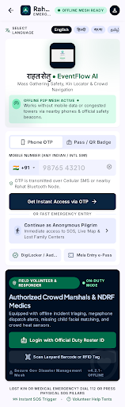
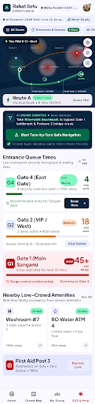
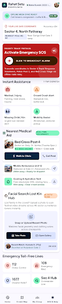
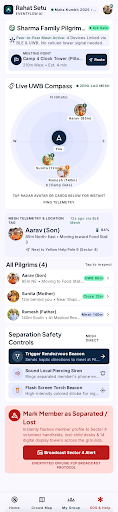
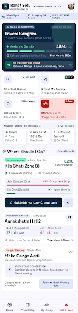
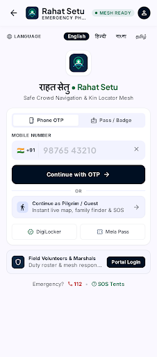
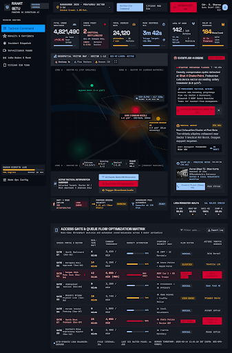

Project: Rahat Setu EventFlow App (ID: 17892163389901824067)
Live Interactive Preview (Iframe)
OFFLINE MESH READY status badge.Original Stitch Screenshot Reference:

Live choke point alerts, real-time wait times for Gates 3/7/11, and Shanti Corridor routing.

High-contrast instant SOS button, nearby medical tents, lost kin dispatch, and water supply.

Peer-to-peer family tracker with proximity compass, offline mesh pings, and missing report button.

Spatial live radar showing density zones, sector congestion indexes, and estimated entry speeds.

Ultra-fast low-friction onboarding flow designed for high network latency conditions.

Organizer tactical dispatch, 4.8M crowd telemetry, drone feeds, and LoRa mesh grid monitor.
